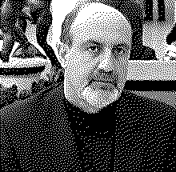

| годы | род. 1960 |
| кто | статистик, бывший трейдер опционов, эссеист; теоретик риска и неопределённости |
| главный труд | пенталогия «Incerto»: «Одураченные случайностью» (2001) · «Чёрный лебедь» (2007) · «Прокрустово ложе» (2010) · «Антихрупкость» (2012) · «Рискуя собственной шкурой» (2018) |
| ключевые идеи | чёрный лебедь · антихрупкость · толстые хвосты · неэргодичность · шкура на кону · via negativa · barbell · эффект Линди · правило меньшинства |
| связано | антихрупкость · чёрные лебеди · эргодичность · дожить до следующего раунда · шкура на кону · решения на дистанции |
тот, кто перевернул среднее с ног на голову.
Талеб показал: в мире с разорением и толстыми хвостами выживает не тот, кто максимизирует матожидание, а тот, кто доживает до следующего раунда.
Нассим Талеб пришёл в публичную мысль с торгового пола опционов — и сразу атаковал то, что все считали священным: среднее, нормальность, прогноз. «Одураченные случайностью» (2001) разобрали, как мы путаем удачу с мастерством. «Чёрный лебедь» (2007) — что историю двигают редкие непредсказуемые удары, а не плавная статистика.
«Антихрупкость» (2012) дала имя третьей категории — тому, что выигрывает от беспорядка. Via negativa, barbell, опциональность как замена знанию. «Рискуя собственной шкурой» (2018) связала честность, знание и выживание: симметрия риска важнее красноречия.
Для теории игр на дистанции Талеб — мост из §01: неэргодичность объясняет, почему тень будущего держится на выживании; шкура на кону — почему взаимность работает только у тех, кто не выходит из игры. Сначала уцелеть, потом кооперировать.